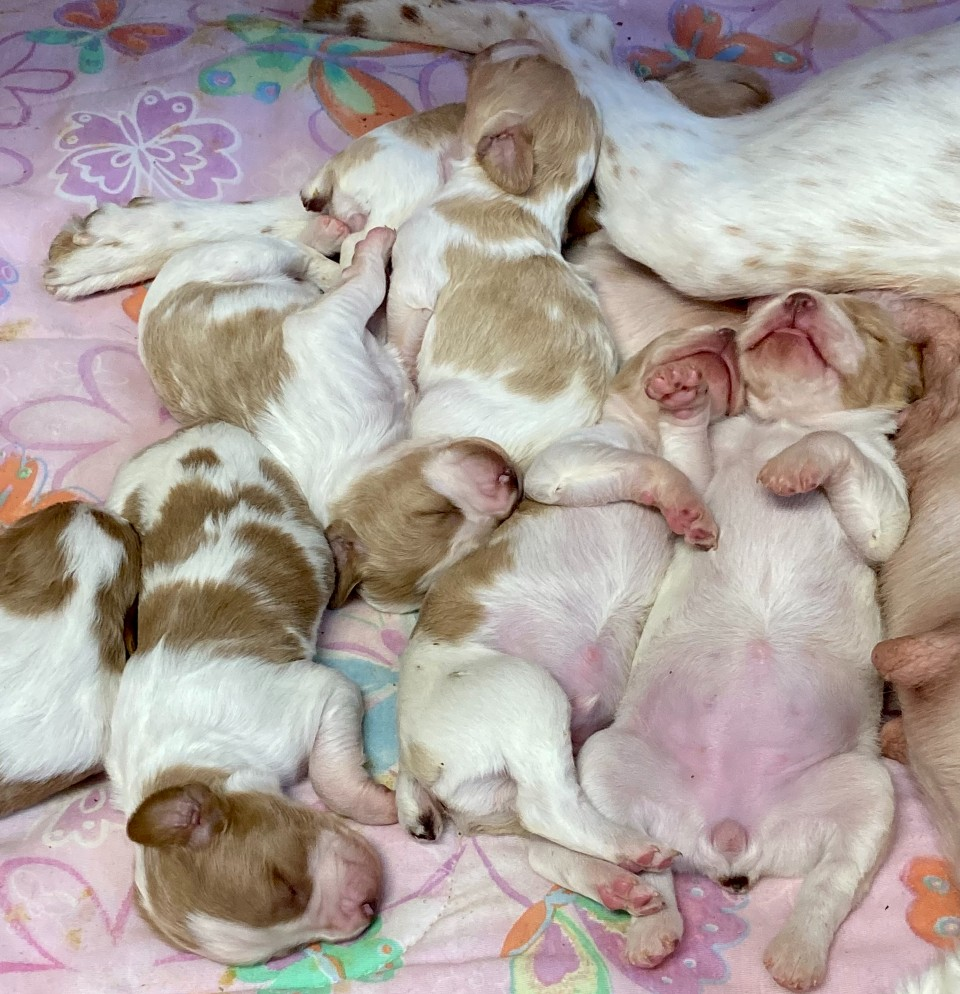

Born: October 26, 2020
Registered Name: Felter’s Rocking Round Robin
Sire: West Mountain Break the Bank Sparky
Dam: Felter’s Texas Champagne
The Beginning
Robin is my Brittany. She is the best dog. I have raised her since birth as well as her mother, Bella, and her grandmother, Mo.
Robin was the third born of seven puppies. While we raised them, her siblings' names were Gretchen, Milo, Eyeballs, Rosie,
Thaddeus, and Seven. For a long time, a lot of them didn't have names. Only the two boys, Milo and Thaddeus, were named at birth.
I don't know where the name Gretchen came from, but the others all have stories. Milo and Thaddeus were named after the animated
movie 'Atlantis: The Lost Empire'. Eyeballs was the first to open her eyes, hence, Eyeballs. Rosie was the runt and I
wanted to give her a cute name, and Seven was the seventh puppy born. We also used to have a dog named Seven, so her name was a
nod to her predecessor.